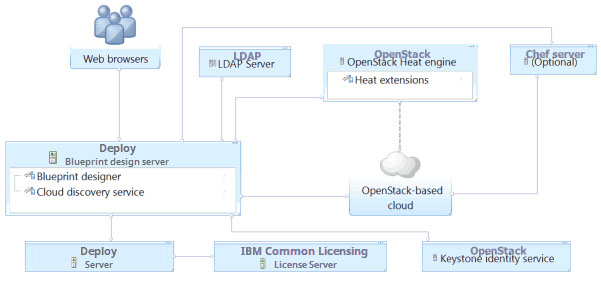
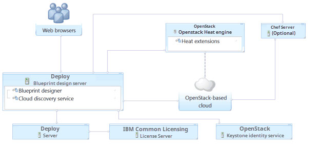

Connecting to OpenStack and OpenStack-based clouds
There are two ways to connect to an OpenStack cloud or a cloud that is based on OpenStack, such as IBM® Cloud Orchestrator. Which method you choose depends on whether you want to use user accounts from an LDAP server or from an OpenStack Keystone server.
About this task
In the first diagram, the blueprint design server retrieves account information from an LDAP server and authentication information from the Keystone identity service.

In the second diagram, the blueprint design server retrieves both account and authentication information from the Keystone identity service.
